重點摘要
- COHAT 是什麼
- Comprehensive Oral Health Assessment and Treatment，完整的口腔評估與治療。它不是「洗牙」而已，而是一套在全身麻醉、氣管插管下，把牙齦上與牙齦下都檢查、記錄、拍 X 光、治療的流程。講義第 4 頁的五個前提：安全而完整地評估牙齦上及牙齦下、需要麻醉及止痛、麻醉中一定要氣管插管、牙齦下檢查需要 X 光、需要專業技術。
- 為什麼重要
- 牙周病是小動物最常見的健康問題之一：2 歲時 70% 的貓、80% 的犬已有牙周病，近年研究接近 90%。小型犬與玩具犬特別容易發病，且隨年齡增加。牙周病的元兇是細菌（牙菌斑），不是結石；牙齦炎可逆，牙周炎不可逆，細菌還可能進入血流影響心、腎、肝。
- 這章要抓的重點
-
- COHAT 八步的順序，每一步做什麼、為什麼。
- 牙齦炎 vs. 牙周炎、牙結石的角色（礦物質＋牙菌斑，提供粗糙表面）。
- 齒式：成犬 42、幼犬 28、成貓 30、幼貓 26；牙齦溝正常深度貓 <0.5 mm、犬 <3 mm。
- 為什麼一定要氣管插管：防止吸入冷卻水、血液、結石碎片。
- 三個神經阻斷位置：眶下孔、下顎孔（下齒槽神經）、中頦孔；常用 lidocaine、bupivacaine。
- 五套分級：牙結石 C0–3、牙齦炎 G0–3、根分叉 F0–3、鬆動度 M0–3、牙周病 PD0–4。
- 無麻醉洗牙的問題（BSAVA 五點）。
- 牙科 X 光：平行法 vs. 角平分線法、延長 vs. 縮短、Chevron effect vs. 根尖骨流失。
- 居家保健：每天刷牙是黃金準則，刷毛要進牙齦溝，每顆牙 5–10 秒以上。
- 容易混淆
- 「洗掉結石」≠ 治好牙周病（要清牙齦下）；平行法只適用於下顎中後段的牙齒；「垂直於牙齒」造成延長、「垂直於感光板」造成縮短；Chevron effect 是規則 V 形的正常影像，根尖骨流失是不規則圓形。
COHAT 八步必考
記法（補充）：「看、麻、監、探、洗、照、治、家」。前三步是麻醉安全，中間三步是診斷（探查 → 清乾淨 → X 光），最後兩步是治療與預防。注意 X 光在洗牙之後（講義 p.84），因為結石會擋住影像。
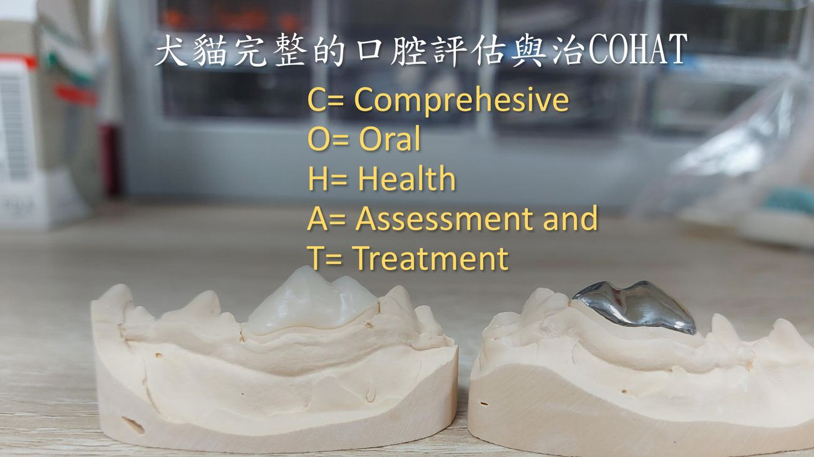
講義大多是照片與 X 光，文字很精簡。每張圖下面都寫了「這張在看什麼」。標「補充」的內容來自一般小動物牙科知識（多數與講義引用的 BSAVA 手冊一致），不是講義原文，考試以老師上課為準。圖片為老師講義投影片截圖。
牙周病是什麼 Periodontal Disease
先搞懂敵人是誰：牙周病是牙菌斑裡的細菌引起的發炎，先發生在牙齦（可逆），再往下破壞牙周組織與骨頭（不可逆）。
發生率理解
- 牙周疾病是小動物病患最常見的健康問題之一（Lund et al. 1999）。
- 2 歲時，70% 的貓和 80% 的犬患有不同形式的牙周疾病（Marshall 2014）。
- 更近期的研究：所有病患接近 90% 的發病率（Fernandes 2012、Queck 2018、Stella 2018）。
- 小型犬和玩具犬特別容易發病，發病率隨年齡增長而增加。
補充：小型犬容易得的原因常被解釋為「牙齒相對於顎骨比例大、齒列擁擠、齒槽骨薄」，牙菌斑容易堆積、骨頭也比較快被破壞。
臨床症狀：牙痛可能引起的可見變化理解
講義引用 WSAVA 指引（JSAP 2020）表 1。重點是：動物很少「看起來牙痛」，多半是行為改變，飼主常以為只是「老了」。
| 類別 | 表現 |
|---|---|
| 行為 | 與飼主的互動模式改變、攻擊性、躲藏、睡眠型態受影響、玩耍行為改變、理毛次數減少；患貓不再對人磨蹭臉部表達情感 |
| 進食 | 進食行為改變、從硬食變成軟食、狼吞虎嚥（吞下整塊而不咀嚼）、單側咀嚼、食物掉到食盆外（不願意咀嚼）、食物或水盆中有血 |
| 口腔與臉部 | 過度流涎、舔嘴唇、牙齒打顫、磨牙（特別是貓）、舌頭垂露在嘴巴外、摩擦臉部或用手掌搔抓臉部、口鼻部周圍脫毛 |
| 鼻 | 鼻子流出血液分泌物（補充：上顎犬齒的牙周病可造成口鼻瘻管，見第 7 節） |
致病機制必考
大魔王是細菌，不是結石。牙結石 = 礦物質 + 牙菌斑，略鹼性；它本身不是主因，但表面粗糙，讓更多牙菌斑附著。所以只把看得到的結石刮掉（例如無麻醉洗牙），牙齦下的細菌還在，牙周病照樣進行。
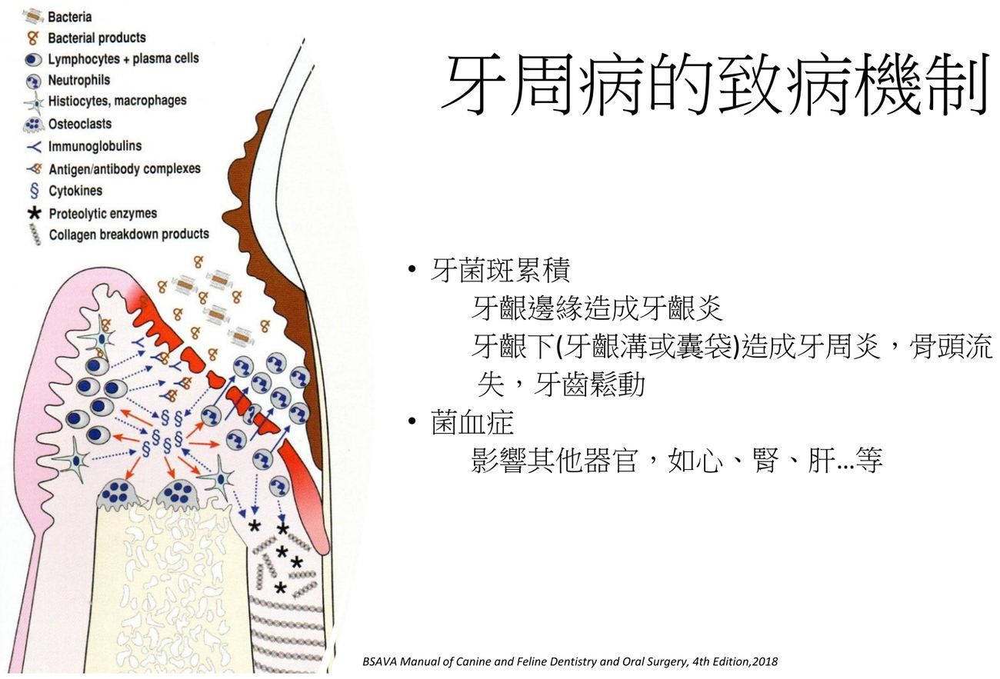
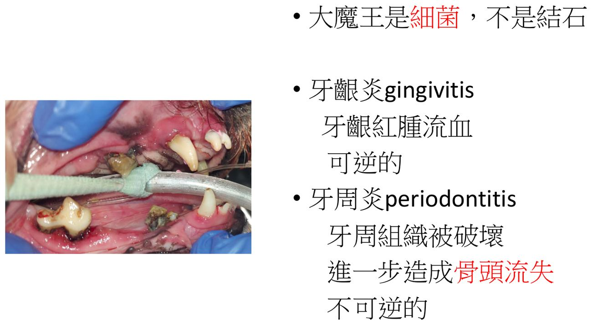
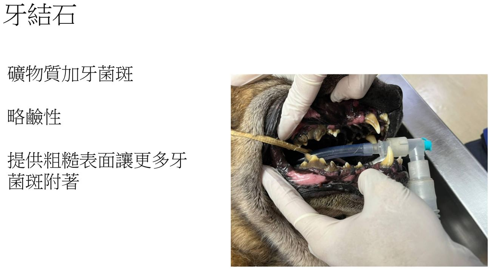
牙齒解剖與齒式 Dental Anatomy
齒式 Dental formula必考
單側（上顎／下顎）的牙齒數目；總數 = 單側合計 × 2。幼年動物沒有臼齒（molar）。
| 動物 | 顎 | 門齒 I | 犬齒 C | 前臼齒 P | 臼齒 M | 總數 |
|---|---|---|---|---|---|---|
| 成犬 | 上顎 | 3 | 1 | 4 | 2 | 42 |
| 下顎 | 3 | 1 | 4 | 3 | ||
| 幼犬 | 上顎 | 3 | 1 | 3 | — | 28 |
| 下顎 | 3 | 1 | 3 | — | ||
| 成貓 | 上顎 | 3 | 1 | 3 | 1 | 30 |
| 下顎 | 3 | 1 | 2 | 1 | ||
| 幼貓 | 上顎 | 3 | 1 | 3 | — | 26 |
| 下顎 | 3 | 1 | 2 | — |
成犬：上 3-1-4-2、下 3-1-4-3，下顎多一顆臼齒 → (10+11)×2 = 42。成貓：上 3-1-3-1、下 3-1-2-1，上顎少一顆前臼齒（沒有 P1）、下顎少兩顆（沒有 P1、P2）→ (8+7)×2 = 30。
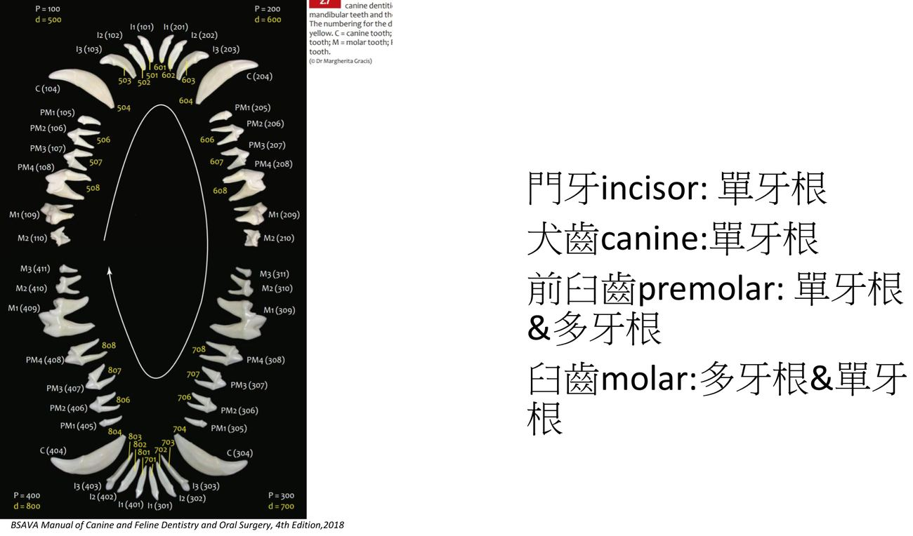
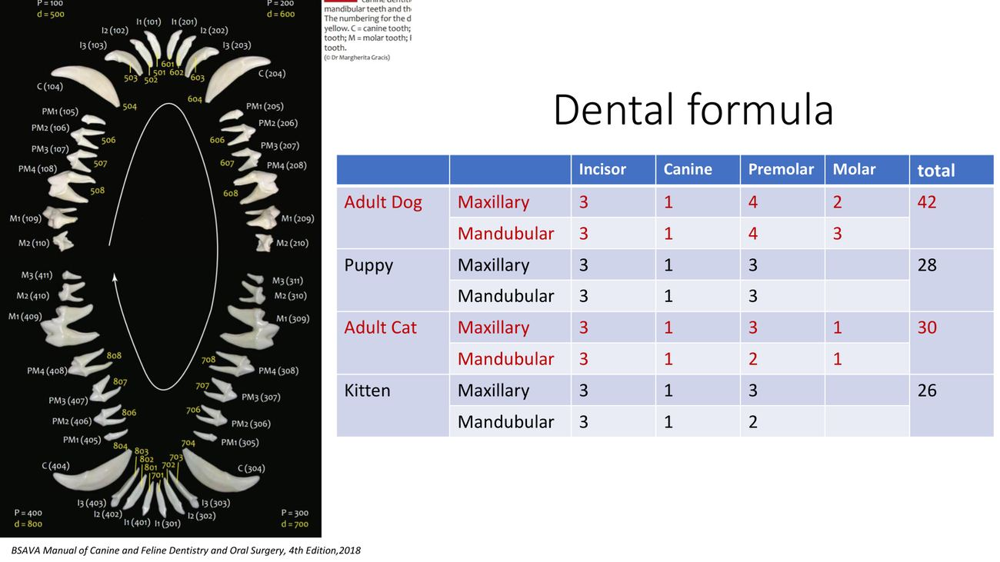
補充（講義圖中標的是三位數牙號，即 Modified Triadan system）：第一位數是象限，1 = 右上、2 = 左上、3 = 左下、4 = 右下（乳牙用 5–8）；後兩位是牙位，從正中往後數，犬齒永遠是 04、第一臼齒永遠是 09（rule of 4 and 9）。貓缺牙的位置跳號：上顎前臼齒是 106–108，下顎前臼齒是 307–308。犬的上顎第四前臼齒（108／208）是 3 個牙根（講義 p.107 提到上顎有 three-root teeth）。
方向用語理解
牙科用語跟一般解剖不一樣，判讀 X 光與寫病歷都會用到：
| 用語 | 意思 |
|---|---|
| Mesial／Distal | 沿著齒弓，朝向正中第一門齒的一側／遠離的一側（取代 rostral／caudal） |
| Labial／Buccal | 朝向嘴唇（門齒、犬齒）／朝向臉頰（前臼齒、臼齒） |
| Lingual／Palatal | 下顎牙齒朝向舌頭的一側／上顎牙齒朝向硬顎的一側 |
| Coronal／Apical | 朝向牙冠／朝向牙根尖 |
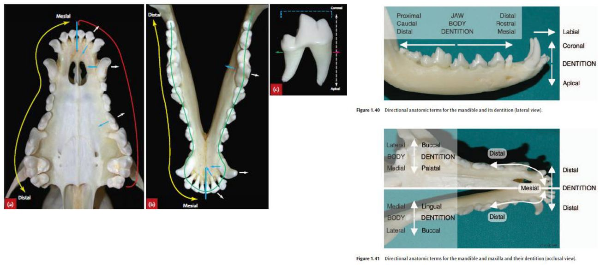
牙齒組織必考
- 牙冠 crown 與牙根 root。
- 三種硬組織：牙釉質 enamel（覆蓋牙冠，最硬）、牙本質 dentin（牙齒主體）、牙骨質 cementum（覆蓋牙根，讓牙周韌帶附著）。
- 牙髓腔 pulp：神經與血管。
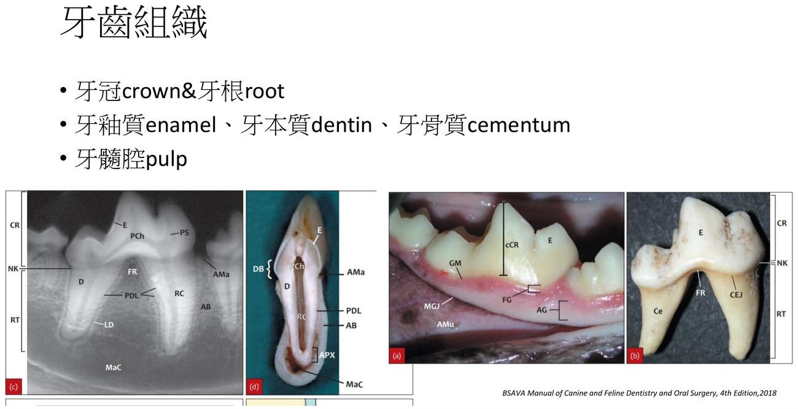
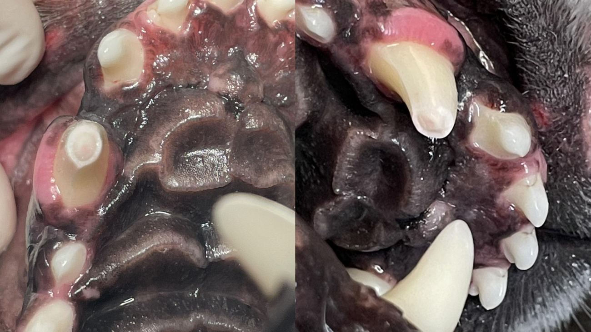
牙周組織必考
| 構造 | 講義重點 |
|---|---|
| 牙齦 gingiva | 游離牙齦（free gingiva, FG）與附著牙齦（attached gingiva, AG） |
| 牙齦溝 gingival sulcus（GS） | 正常深度：貓 < 0.5 mm、狗 < 3 mm。補充：超過就叫牙周囊袋（periodontal pocket），代表附著組織已流失 |
| 齒槽骨 alveolar bone（AB） | 容納牙根的骨頭 |
| 牙周韌帶 periodontal ligament（PDL） | 拉住牙根與齒槽骨 |
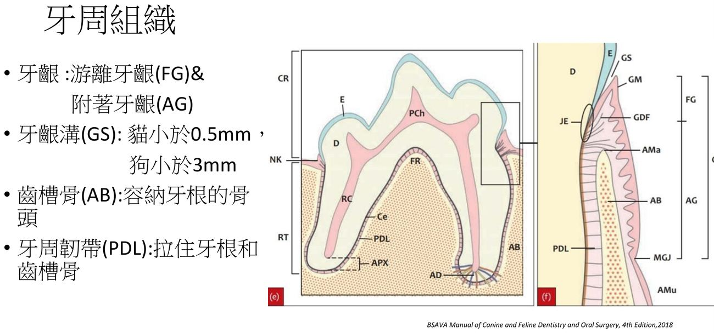
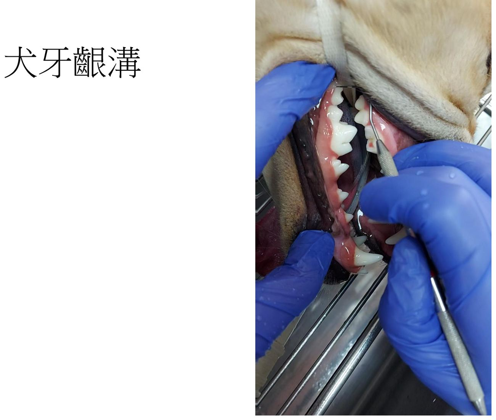
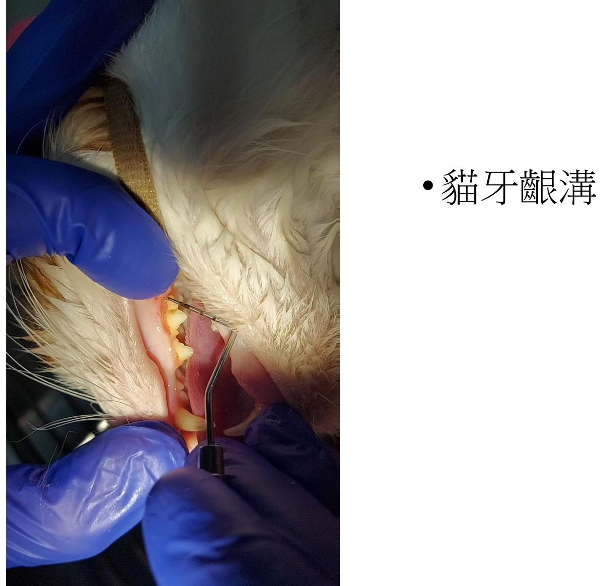
第一步：門診與麻醉前評估
清醒時能看的有限，但足夠決定要不要麻醉、麻醉風險多高、跟飼主溝通估價。
清醒病患的口腔檢查理解
- 安全第一，手不可放在動物咬合面。
- 良好的光源。
- 直接接觸要戴手套；間接可用棉棒、壓舌板、冰棒棍打開口腔、掀起嘴唇。
- 看什麼：咬合、牙齒缺損、斷裂、牙結石覆蓋程度、牙齦退縮、牙齦炎、牙根暴露、口腔黏膜狀況、有無口腔腫瘤。
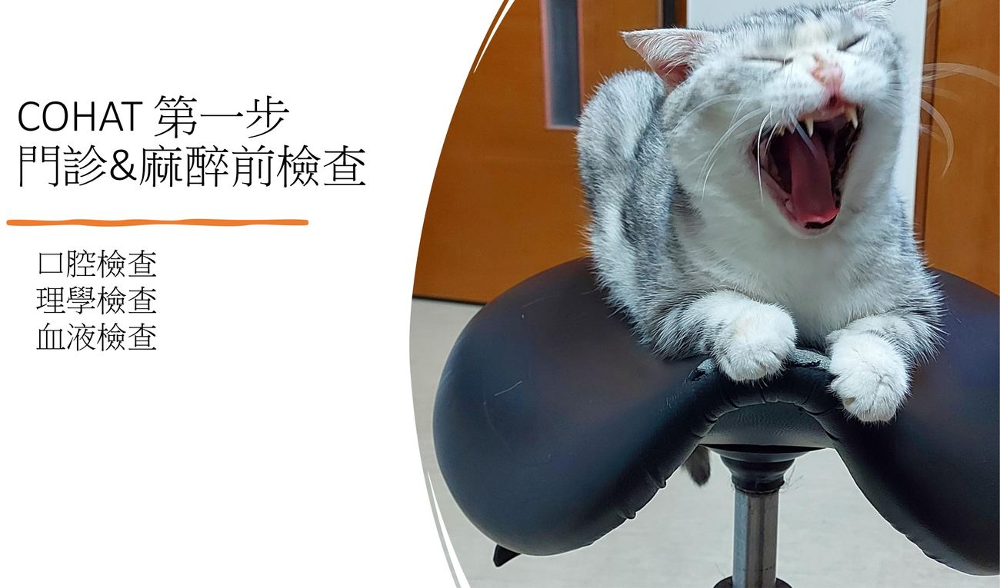
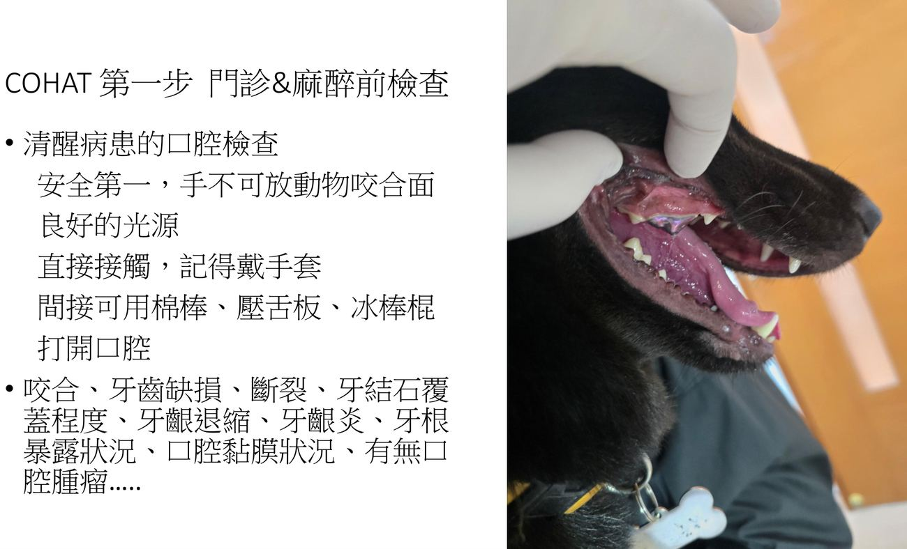
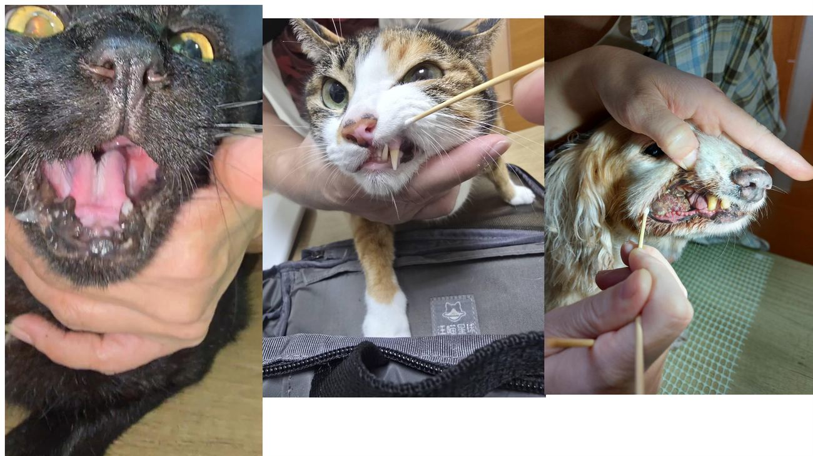
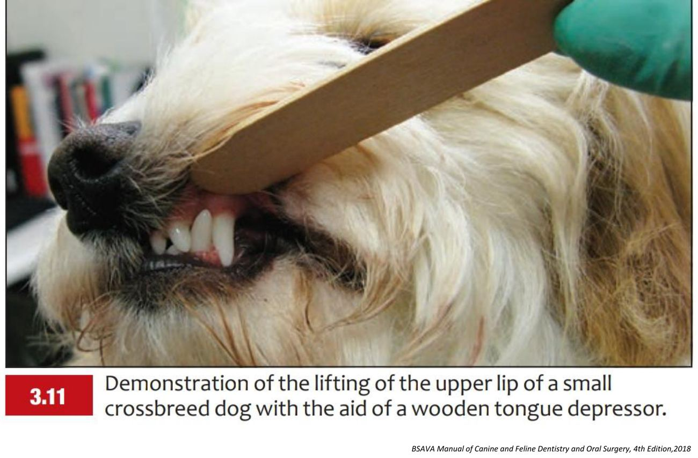
麻醉前評估必考
| 項目 | 是否必要 |
|---|---|
| 理學檢查 | 必須（外觀左右對稱、步態、外傷、眼、耳、黏膜顏色、脫水、皮膚、淋巴結、呼吸、循環、消化、泌尿生殖、骨骼肌肉、神經系統） |
| 血液檢查 | 必須 |
| X 光檢查 | 視狀況而定 |
| 超音波檢查 | 視狀況而定 |
| 麻醉風險分級 | ASA |
ASA 麻醉分級必考
| 分級 | 定義 | 舉例（補充） |
|---|---|---|
| ASA I | 健康正常病患 | 年輕健康犬的選擇性手術 |
| ASA II | 輕度系統性疾病，但無功能障礙 | 老年、輕度肥胖、控制良好的皮膚病 |
| ASA III | 中度至重度全身性疾病，且部分功能障礙 | 貧血、脫水、代償中的心臟病 |
| ASA IV | 重度全身性疾病，有功能障礙，且危及生命 | 失代償的心衰竭、嚴重腎衰竭 |
| ASA V | 瀕死，不立即手術預期無法存活 | 休克、嚴重創傷 |
補充：牙科病患多是老年動物，常合併心臟病、腎病，所以麻醉前評估是 COHAT 的第一步，而不是可省略的程序。
第二、三步：麻醉計畫、插管、監控與術後
第二步：麻醉前準備及計畫理解
- 再次理學檢查，確認體重、體溫、心跳等。
- 詢問空腹狀況。
- 簽手術同意書。
- 放置 IV catheter：給輸液與麻醉藥。
為什麼一定要氣管內插管必考
- 提供氧氣及氣體麻醉劑，達到良好而穩定的全身麻醉。
- 防止病患吸入：
- 液體：冷卻水、血液、唾液、藥水（尤其根管治療）。
- 固體：牙結石、部分牙齒、拋光膏、器械。
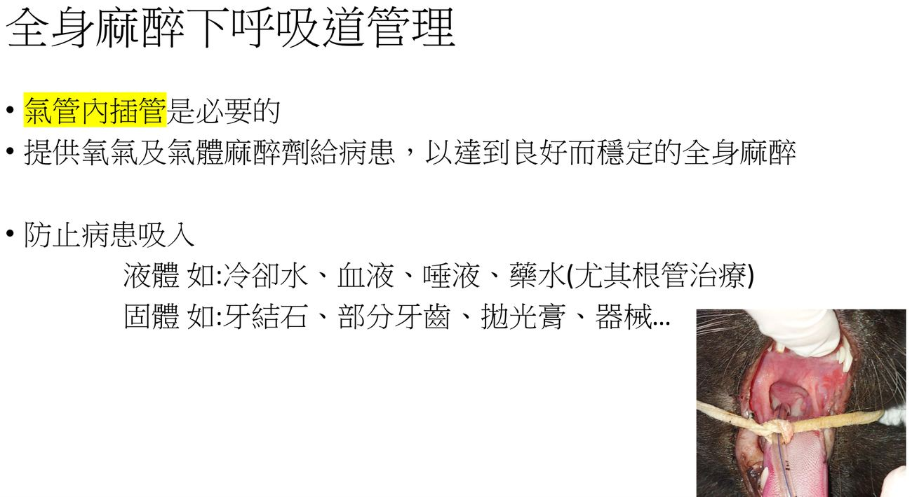
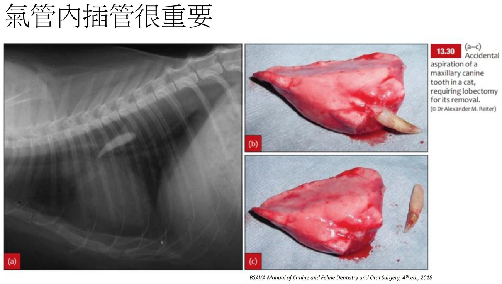
水很重要，但不能進呼吸道理解
- 冷卻：動力機器會產熱
- 清潔口腔：食物渣、毛髮、拋光膏、藥水、唾液
- 移除洗牙後的細菌、牙結石碎屑
- 冬天用溫水，減少體溫散失
- 氣管插管！
- 脖子墊高、吻部要低（讓水往口外流）
- 操作時勿抬頭
- 口腔放棉球或紗布塊，術後一定要取出
- 拔管前重複清潔口腔，確定喉頭乾淨，直到恢復吞嚥反射
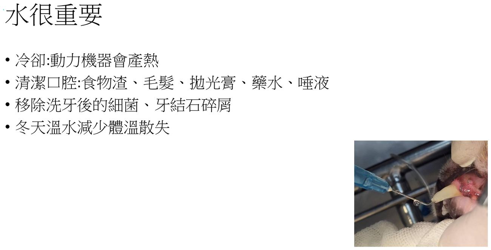
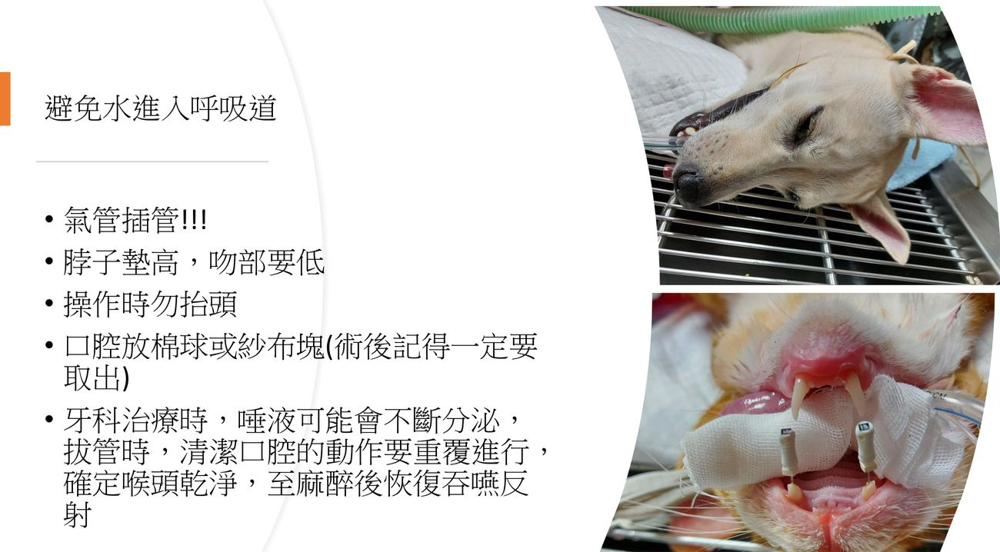
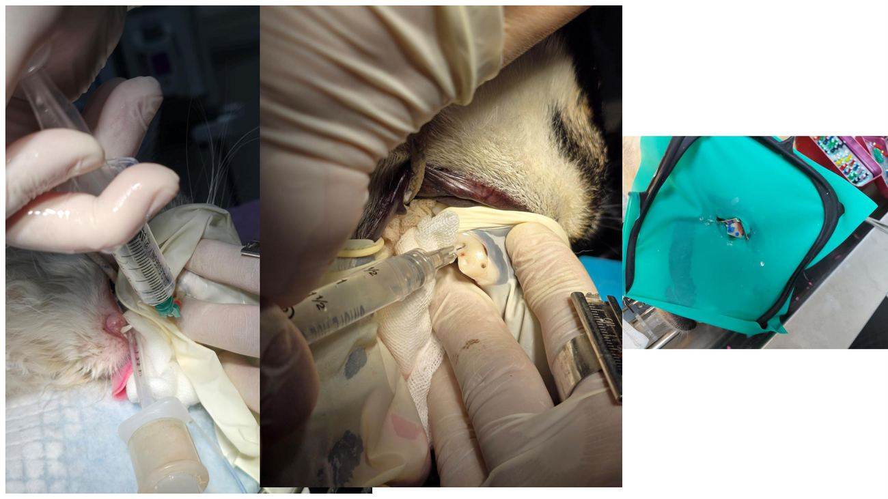
補充：氣管內管的氣囊要充飽並確認不漏氣；翻身換邊時先把管子與麻醉機分開，避免管子在氣管內轉動造成傷害。牙科手術時間長、口腔一直在噴水，體溫下降是常見問題，所以講義特別提到冬天用溫水。
第三步：麻醉監控必考
至少監控五項：血氧（SpO₂）、心跳、血壓、呼吸速率、體溫。
麻醉後注意事項（飼主衛教）理解
- 回家後神經反射恢復才可吃喝。
- 先從水開始喝，不會嗆到或吐，才可以吃東西；當天都要少量多餐。
- 口腔若有傷口或縫線，講義寫「泥狀或太硬的食物皆不適合」；兩週內避免玩具、潔牙骨、乾燥肉乾。
疼痛管理與神經阻斷
三個時間點的疼痛控制必考
| 時間 | 講義內容 | 給藥途徑 |
|---|---|---|
| 術前 | 止痛藥只能暫時舒緩，要解決問題需要牙周治療 | — |
| 術中 | 針劑 NSAIDs、嗎啡類（opioids）止痛、神經阻斷、輕柔的操作技術 | NSAIDs 與 opioids：注射（SC／IV／IM，依藥物而定）；神經阻斷：局部麻醉劑在神經孔周圍注射（perineural） |
| 術後 | 口服 NSAIDs、嗎啡類止痛、gabapentin、冰敷 | NSAIDs：PO；opioids：依藥物（補充：如 buprenorphine 在貓可經口腔黏膜 OTM 給予）；gabapentin：PO；冰敷：外用 |
補充：這是「多模式止痛（multimodal analgesia）」的概念：不同機轉的藥物併用，每一種可用較低劑量。NSAIDs 使用前要確認腎功能、脫水狀態，並且不和類固醇併用。神經阻斷可以降低術中吸入麻醉劑的需要量。
常用局部麻醉劑理解
講義引用 WSAVA 指引表 5。給藥途徑：局部神經周圍注射。
| 局部麻醉劑 | 起效（分鐘） | 常用濃度（%） | 阻斷時間（小時） | 相對效力（lidocaine = 1） | 建議最高劑量（mg/kg） |
|---|---|---|---|---|---|
| Lidocaine | 5–15 | 1、2 | 1–2 | 1 | 犬 10；貓 5 |
| Mepivacaine | 5–15 | 1、2 | 1.5–2.5 | 1 | 犬 4；貓 2 |
| Bupivacaine | 10–20 | 0.25、0.5、0.75 | 4–6 | 4 | 犬 4；貓 2 |
| Ropivacaine | 10–20 | 0.5、0.75 | 3–5 | 3 | 犬 3；貓 1.5 |
| Levobupivacaine | 10–20 | 0.5、0.75 | 4–6 | 4 | 犬 2；貓 1 |
較常使用 lidocaine 和 bupivacaine。每個位置的注射量通常 犬 0.2–1 mL、貓 0.1–0.2 mL（表註：0.25–1 mL，依體型、解剖構造與體重而異；可依手術時間與術後止痛需要重複注射，但總量要低於最高建議劑量）。
怎麼選：lidocaine 起效快但只有 1–2 小時；bupivacaine 起效慢但維持 4–6 小時，適合拔牙後的術後止痛。注意貓的最高劑量大約是犬的一半。
注射前先回抽確認沒有打進血管；多個位置阻斷時，要把所有位置的總劑量加起來算 mg/kg，小型犬與貓特別容易超過。貓的眶下管很短，針頭往後推太深有刺傷眼球的風險。
三個神經阻斷位置必考
| 位置 | 阻斷的神經 | 麻醉範圍（補充） |
|---|---|---|
| 眶下孔 Infraorbital foramen | 眶下神經（上顎神經的分支） | 同側上顎牙齒（往後推進針頭可涵蓋較後方的牙齒）與上唇、鼻 |
| 下顎孔 Mandibular foramen | 下齒槽神經（inferior alveolar nerve） | 同側整排下顎牙齒與下唇；注意舌頭也可能被麻醉，恢復期要防咬傷舌頭 |
| 中頦孔 Middle mental foramen | 頦神經（下齒槽神經的末端） | 同側下顎吻側：門齒、犬齒與前方前臼齒 |
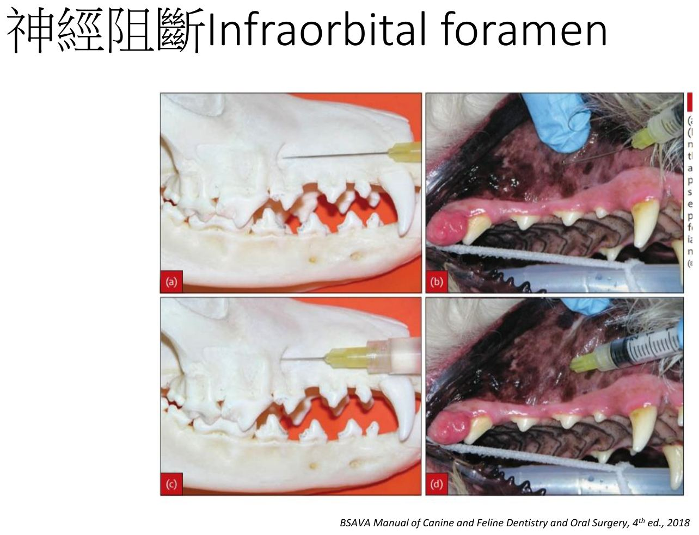
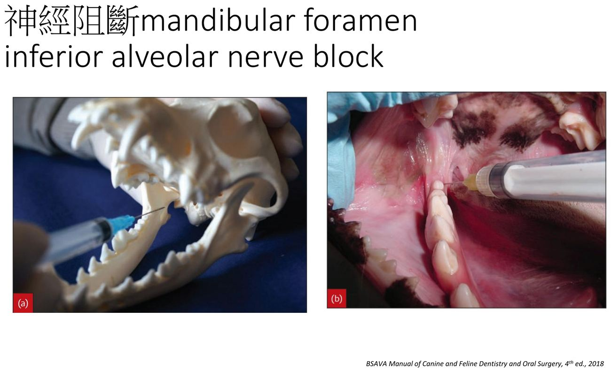
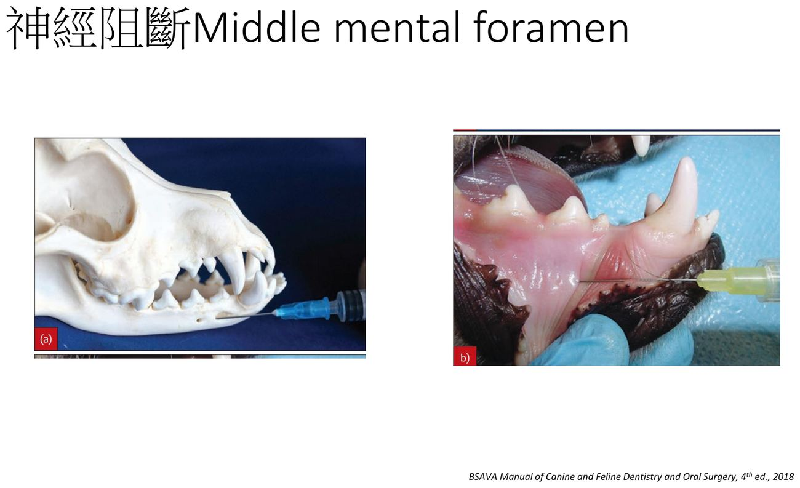
第四步：麻醉下軟、硬組織檢查
麻醉誘導後才能真正檢查：先評估軟組織（舌頭、牙齦、黏膜、口咽、扁桃腺），再整體與個別評估硬組織與齒列（缺牙、歪斜、斷裂），最後評估牙周健康（探測深度、牙齦萎縮與增生、活動性、根分叉、其他病變）。
全身麻醉下口腔檢查的 11 個步驟理解
- 檢查口咽：建議在氣管插管並填塞喉嚨之前做。
- 拍攝術前照片。
- 減少細菌數量：用 0.12% chlorhexidine 漱口液沖洗口腔（口腔局部使用）。
- 評估並確定齒列：乳牙、恆牙或混合，有無缺牙。
- 評估軟組織：口腔黏膜（顏色、濕潤度、腫脹）、嘴唇與臉頰、腭、舌頭與舌下組織、口腔團塊。
- 專業洗牙與拋光。
- 用探針進行牙科與牙周檢查。
- 拍攝牙科 X 光。
- 牙周疾病分級並記錄：合併臨床表現和牙科 X 光分級。
- 牙周治療、拔牙或手術。
- 術後 X 光與照片。
補充：先用 chlorhexidine 沖洗，是為了降低洗牙時噴出的含菌氣霧（aerosol）與菌血症的細菌量。
環境與人的準備看過
- 牙科治療要有獨立的空間（噴水、氣霧、噪音）。
- 人的準備：良好光源、放大設備（放大眼鏡或放大鏡）、個人防護（眼鏡、面罩、檢診手套）、舒適座椅。
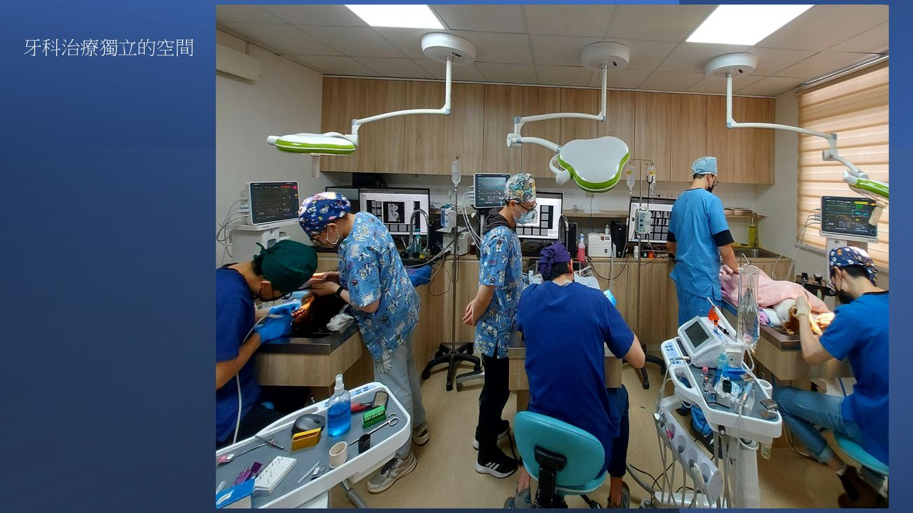
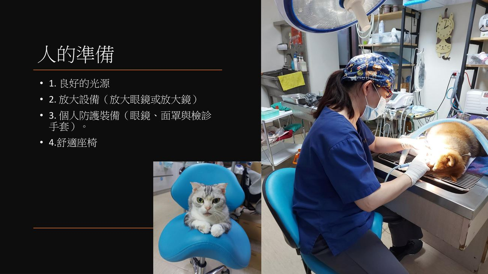
動物防護的準備理解
- 動物眼睛的防護（補充：點眼用潤滑劑，避免噴水與碎屑傷到角膜）。
- 減少身體沾濕（補充：濕毛會加速失溫）。
- 避免水或物體進入呼吸道（插管、咽喉填塞）。
- 舌頭與軟組織的防護。
- 避免氣管內管移動或破壞。
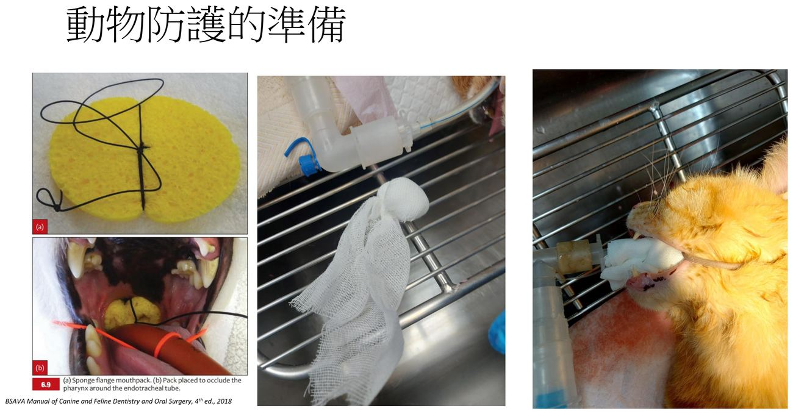
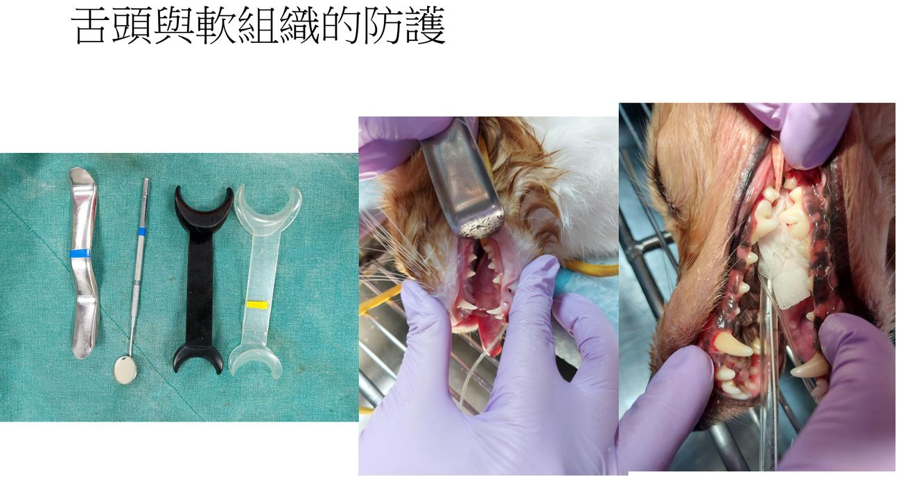
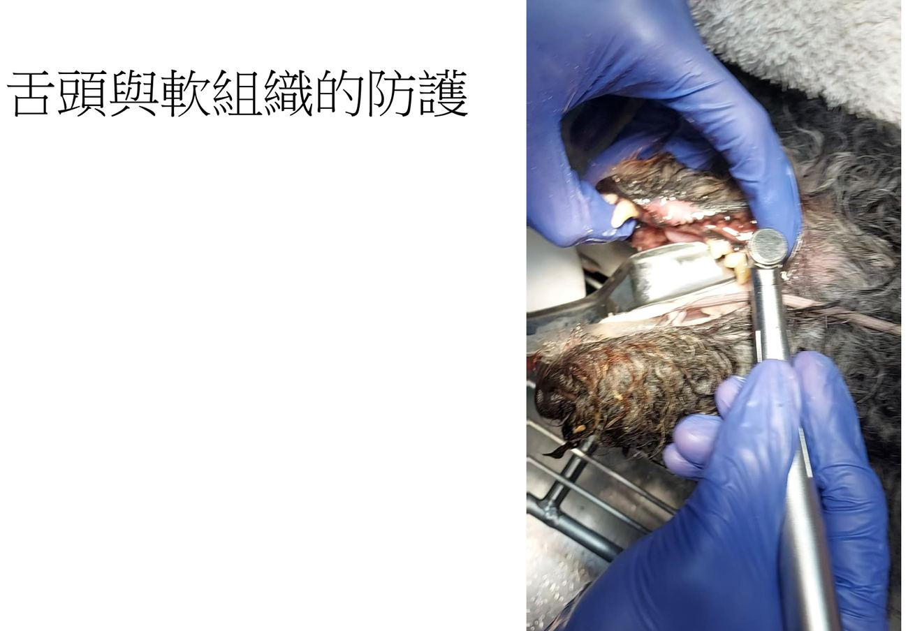
開嘴器：可用與禁用必考
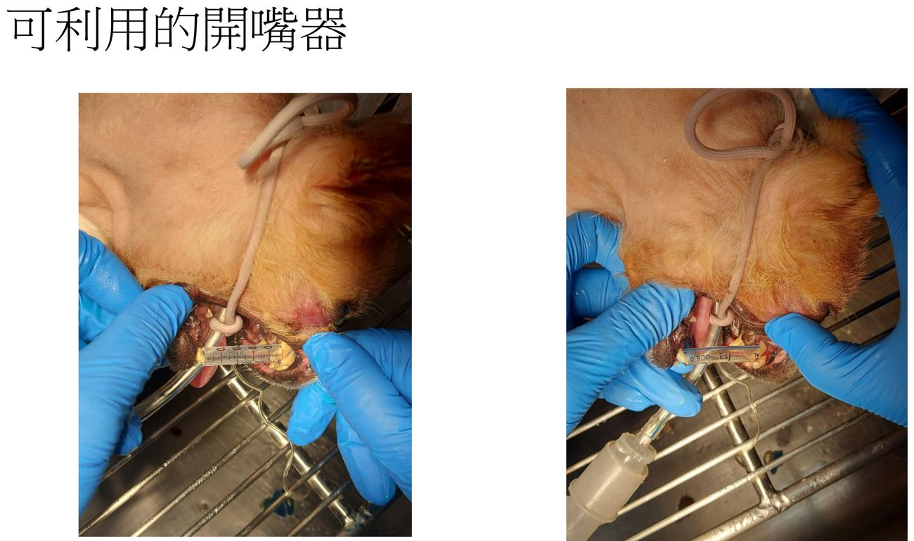
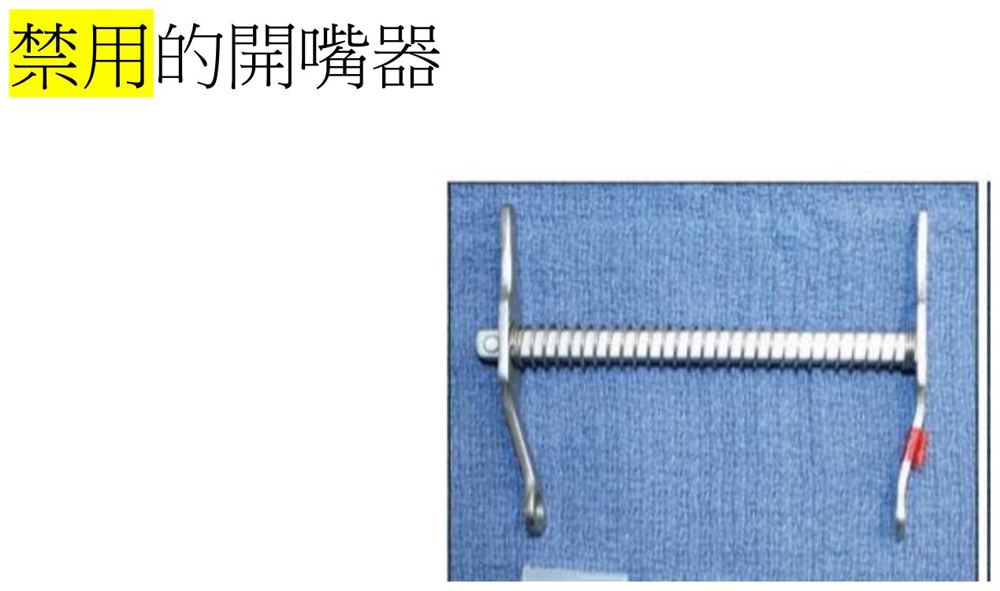
彈簧式開嘴器會把嘴巴持續撐到最大。在貓，長時間最大張口會壓迫上頜動脈（maxillary artery），影響腦部與視網膜血流，已有麻醉後失明與神經症狀的報告；也可能傷到顳顎關節。所以只能用短支撐物，撐開到剛好能操作即可，時間也不要過長。
牙周檢查要看的 8 項必考
牙結石、牙菌斑、牙齦炎與牙齦出血、牙齦退縮、牙齦腫大或增生、牙周囊袋、牙根分叉侵犯程度、牙齒鬆動程度。分級方式見下一節。
尖銳的鉤狀器械，探查硬組織：齲齒、牙齒吸收、斷裂處有無露髓。
鈍頭、有刻度，伸進牙齦溝量深度，也用來量根分叉與牙齦退縮。
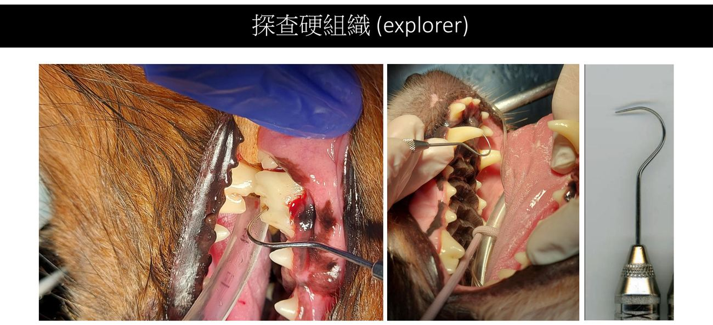
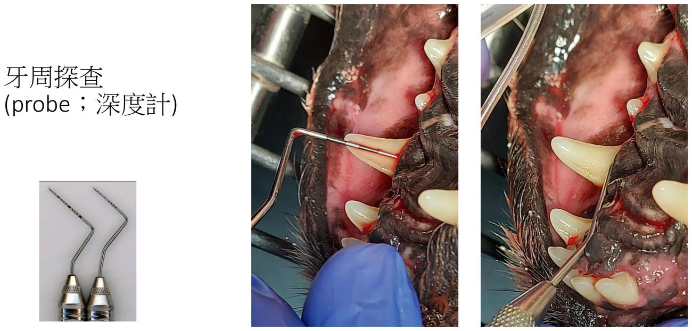
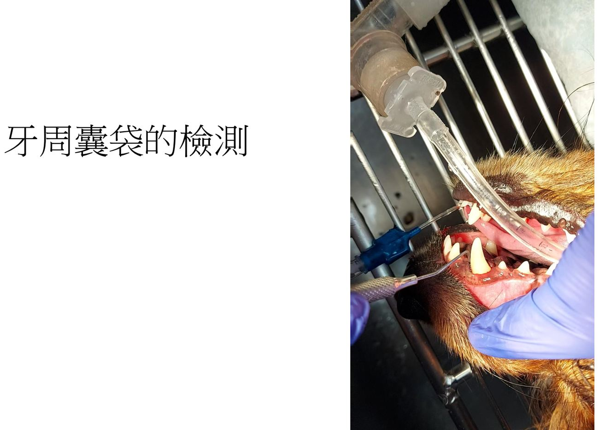
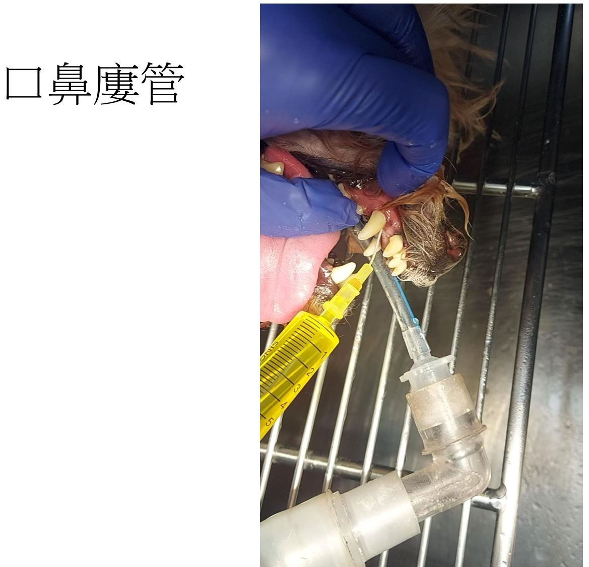
補充：上顎犬齒的牙根很長，腭側只隔一層薄骨就是鼻腔。腭側牙周囊袋很深時，會穿通到鼻腔形成口鼻廔管，臨床上是單側流鼻水、打噴嚏、鼻出血（對應第 2 節症狀表的「鼻子流出血液分泌物」）。檢查時在腭側探針可以伸得很深，沖水時水會從同側鼻孔流出。常見於臘腸犬等小型犬。
牙周檢查分級
五套分級要分清楚它們各自量的是什麼：C 是結石量、G 是牙齦發炎、F 是根分叉、M 是鬆動、PD 是整體牙周病階段。前四項每顆牙分別記錄，最後再合併 X 光判定 PD。
牙結石 Dental calculus（C）必考
| 分級 | 定義 |
|---|---|
| C0 | 無牙結石 |
| C1 | 牙齦上的結石占牙面 1/3 以下 |
| C2 | 牙齦上結石占 1/3 以上、不超過 2/3，或牙齦下有部分結石 |
| C3 | 牙齦上結石占 2/3 以上，或牙齦下有連續厚實結石 |
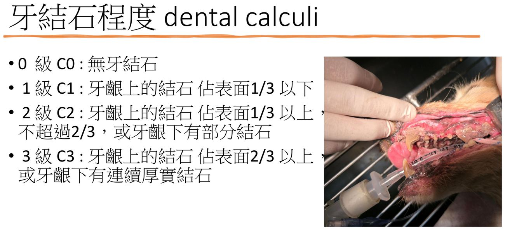
牙齦炎 Gingivitis（G）必考
| 分級 | 定義 | 關鍵 |
|---|---|---|
| G0 | 正常牙齦 | |
| G1 | 輕微發炎：顏色稍有變化與腫脹 | 探查時「未」出血 |
| G2 | 中度發炎：發紅與腫脹 | 探查時「有」出血 |
| G3 | 嚴重發炎：明顯紅腫與潰瘍 | 自發性出血傾向 |
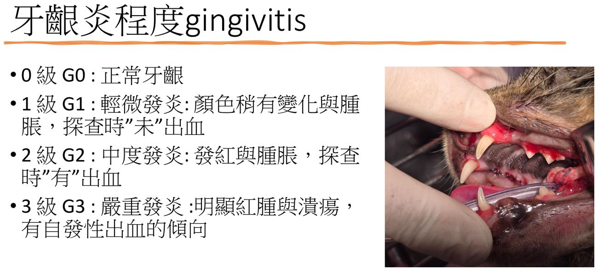
根分叉暴露 Furcation exposure（F）必考
只適用於多牙根的牙齒：兩根之間的骨頭流失後，探針可以伸進牙根之間。
| 分級 | 定義 |
|---|---|
| F0 | 正常 |
| F1 | 牙周探針伸入未超過一半 |
| F2 | 伸入超過一半，但未貫穿 |
| F3 | 探針會貫穿（從頰側穿到舌／腭側） |
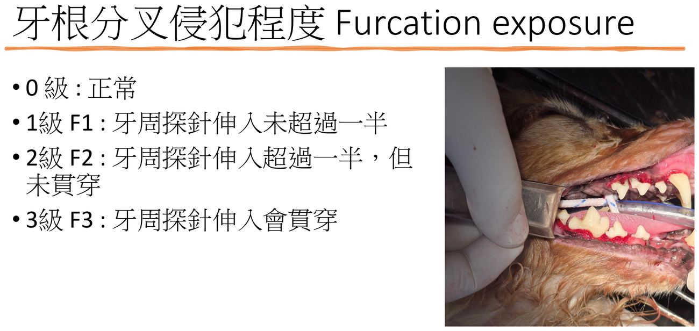
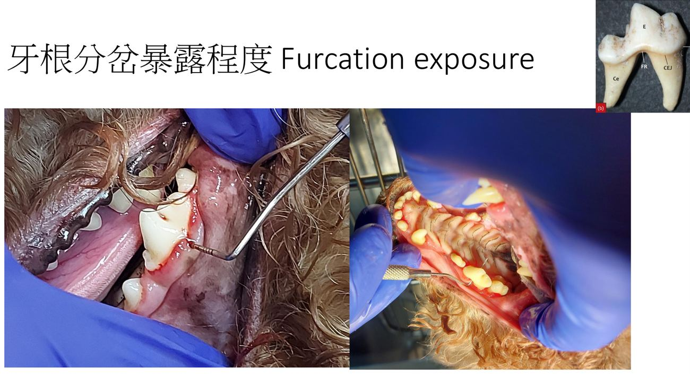
牙齒鬆動 Mobility（M）必考
| 分級 | 定義 |
|---|---|
| M0 | 生理性移動，少於 0.2 mm |
| M1 | 水平移動超過 0.2 mm，未超過 0.5 mm |
| M2 | 水平移動超過 0.5 mm，未超過 1 mm |
| M3 | 水平移動超過 1 mm，或可上下移動 |
記法（補充）：0.2 → 0.5 → 1 mm 三個切點；能「上下」動（垂直方向）就直接是 M3。
牙周病分級 Periodontal disease stage（PD）必考
| 分級 | 狀態 | 根分叉 | 附著流失 |
|---|---|---|---|
| PD0 | 正常 | — | — |
| PD1 | 只有牙齦炎（可逆） | — | 無 |
| PD2 | 早期牙周炎 | F1 | < 25% |
| PD3 | 中度牙周炎 | F2 | 25–50% |
| PD4 | 末期牙周炎 | F3 | > 50% |
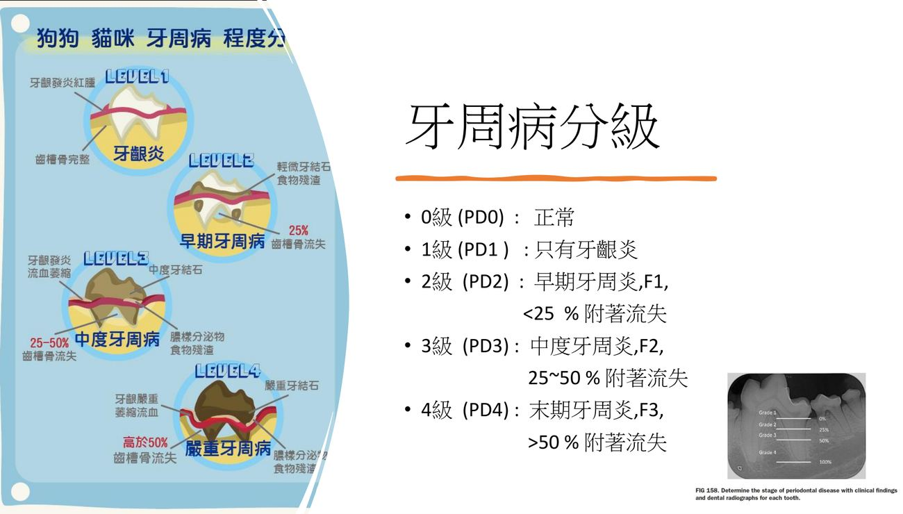
PD1 到 PD2 的差別就是「可逆 vs. 不可逆」：PD1 只有牙齦炎，處理後可以恢復；從 PD2 開始已經有附著流失（骨頭與牙周韌帶被破壞）。附著流失要靠探針＋X 光才能判斷，這就是為什麼分級要合併臨床檢查與 X 光。
互動練習：判定 PD 分級
記錄用牙科圖表看過
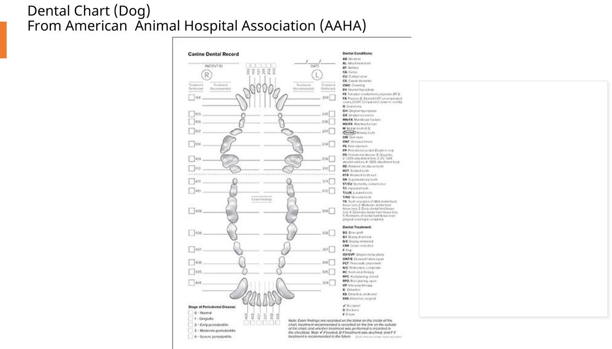
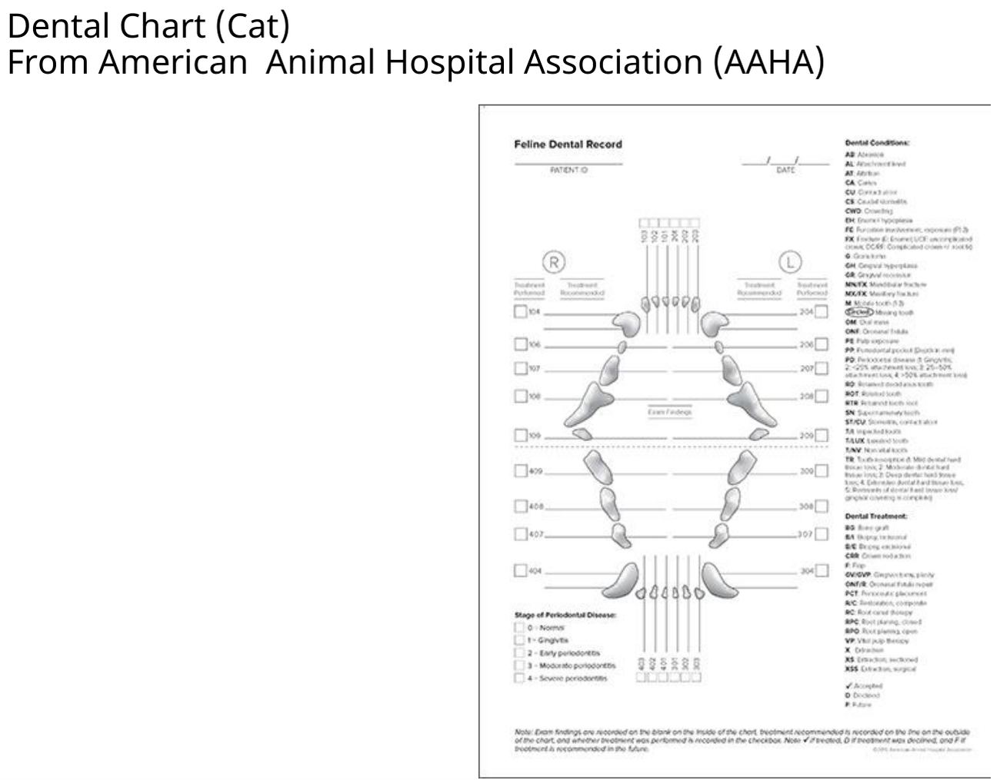
第五步：移除牙菌斑與牙結石
包括牙齦上及牙齦下；工具是動力洗牙機、手持式器械，最後拋光。
動力洗牙機：磁伸式 vs. 壓電式理解
| 磁伸式 Magnetostrictive | 壓電式 Piezoelectric | |
|---|---|---|
| 講義圖 | 主機＋多支金屬片疊（metal stack）工作尖 | 細手柄＋鎖上的工作尖 |
| 振動方式（補充） | 工作尖做橢圓或圓形運動，整個尖端都在作用 | 工作尖做直線往返運動，側面作用 |
| 產熱（補充） | 較多，更依賴噴水冷卻 | 較少 |
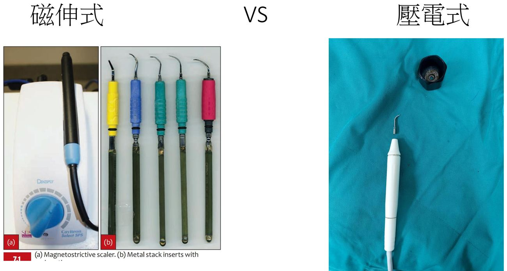
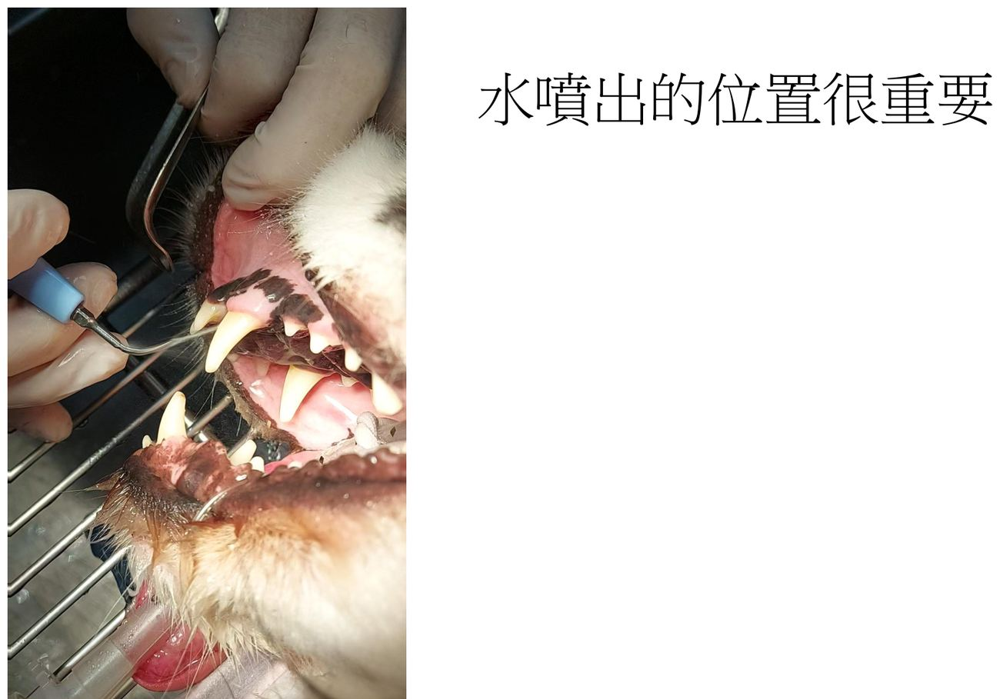
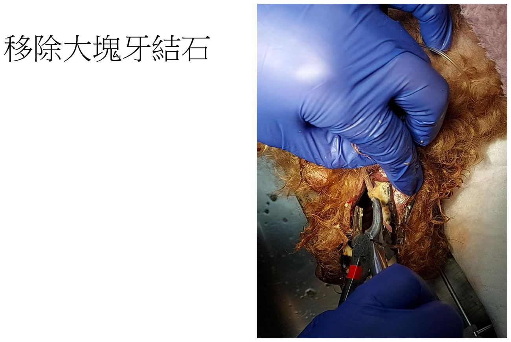
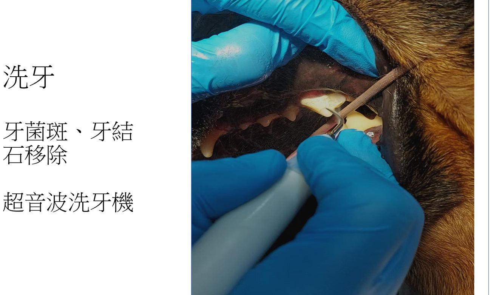
補充：工作尖用側面輕觸牙面、持續移動，不要用尖端垂直戳，也不要停在同一顆牙上太久，否則熱會傷到牙髓。
手持式器械必考
銳利，尖端呈三角形切面，用在牙齦上。伸進牙齦下會割傷牙齦。
圓鈍的背面與尖端，用在牙齦下（清牙齦溝與牙根面），不會傷到牙齦。
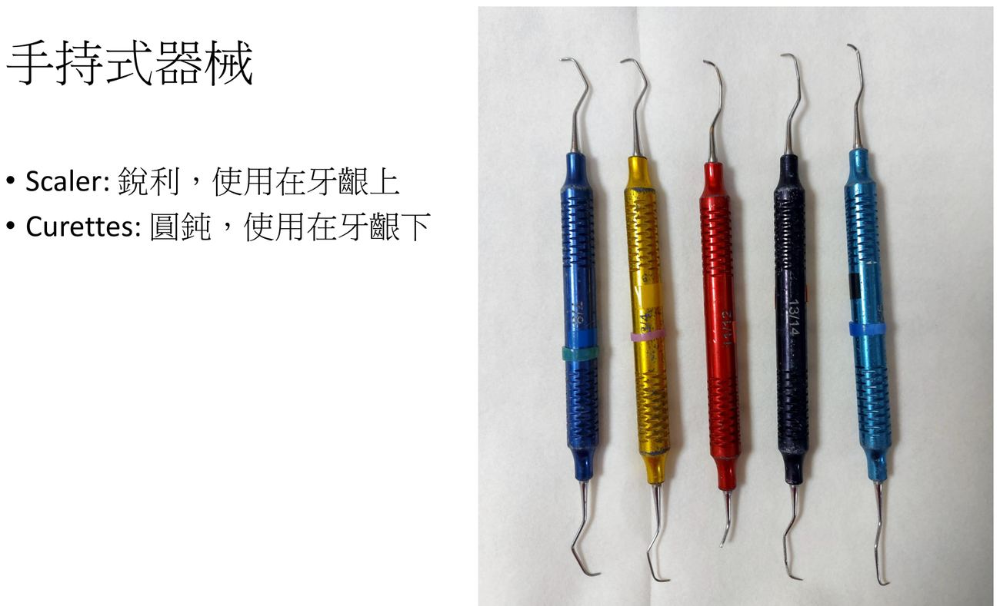
拋光 Polishing理解
- 移除牙菌斑、汙漬。
- 讓牙齒表面平整（洗牙後牙面有細微刮痕，不拋光反而讓牙菌斑更容易附著，補充）。
- 要移動位置，避免過熱。
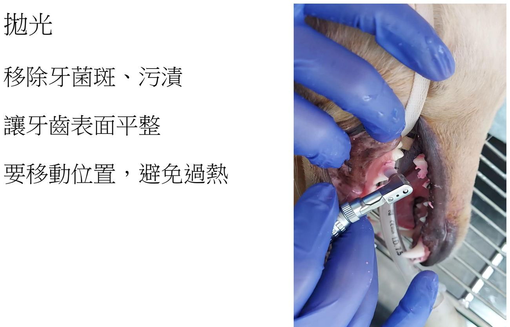
無麻醉洗牙的醫學與倫理問題必考
講義引用 BSAVA Manual 4th ed. 的五點：
- 動物在沒有麻醉下無法接受完整的口腔牙周探查和放射線檢查。
- 沒有麻醉根本無法移除牙齦下的牙菌斑和牙結石；只移除牙齦上的是無效的，無法改善寵物的健康。
- 無麻醉是騙人的（deceptive），會讓飼主產生虛假的成就感。
- 牙周器械是尖銳的，可能對清醒和移動的動物造成傷害。
- 沒有氣管插管下刮除結石，可能導致病患吸入牙結石。
講義另外補充四點：無法控制疼痛、未兼顧動物福利；若造成口腔出血，加上動物因疼痛激動，出血不易控制；利器會傷害牙釉質，牙釉質一旦刮傷不平整，細菌與結石更容易附著；操作人員也有風險。
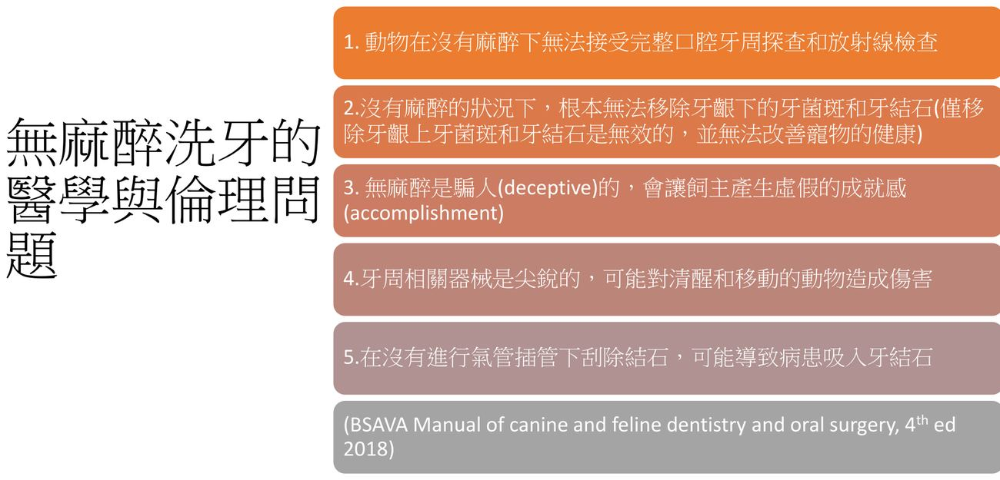
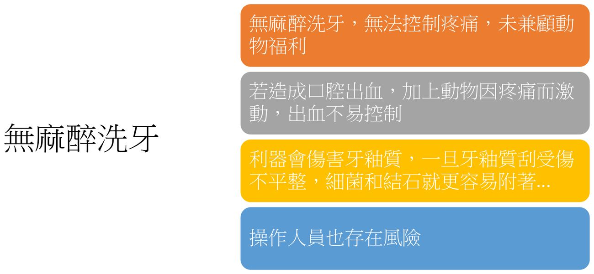
第六步：牙科 X 光拍攝
牙齒有一半以上在牙齦下，肉眼與探針看不到牙根、牙周韌帶與骨頭，所以需要 X 光。講義兩句口號：No X-ray, no density；No anesthesia, no periodontal treatment。
設備理解
- 拍什麼：牙齦下的牙根、牙周韌帶與骨頭。
- X 光機：分落地式和攜帶式；約 70 kVp。
- 影像接收：傳統膠片、CR（磷光板）、DR（數位感應器）。
什麼時候拍、拍多少必考
全口牙科 X 光影像能顯現出比臨床檢查多 40% 的病理學發現（Verstraete et al. 1998）。費用考量下常需要與飼主取得平衡，但至少應針對臨床異常的牙齒進行牙科 X 光檢查（WSAVA）。
X 光要在洗牙後進行：結石會遮住牙冠與牙頸部的影像。所有牙科 X 光都在全身麻醉下拍攝。
平行法 vs. 角平分線法必考
| 平行法 Parallel technique | 角平分線法 Bisecting angle technique | |
|---|---|---|
| 適用 | 只適用於下顎中段到後段的牙齒（下顎前臼齒後段、臼齒） | 大部分牙齒都用這個方法 |
| 擺法 | 感應器與牙齒長軸平行，X 光垂直於兩者 | 找出「牙齒長軸」與「感應器平面」夾角的角平分線，X 光垂直於這條角平分線 |
| 為什麼（補充） | 下顎後段的舌側沒有骨頭擋住，感應器可以放到牙齒正後方、與牙齒平行 | 上顎有硬顎、下顎前段有聯合，感應器只能斜放，只好用角平分線讓影像長度等於實際牙齒長度 |
互動示意：X 光角度與影像長度
點按鈕看看三種角度拍出來的影子長度（橘色）跟實際牙齒（棕色）比起來如何。
這是補充的幾何示意，角度為示意值。記法：垂直於牙齒 → 延長；垂直於感應器 → 縮短；兩者之間（垂直於角平分線）長度剛好。
各區牙齒的拍法理解
補充：上顎第四前臼齒有三根（近心頰根、近心腭根、遠心根），正側面拍時近心兩根會重疊。把 X 光往近心或遠心偏一點角度（SLOB rule：Same Lingual, Opposite Buccal，跟著 X 光管移動方向一起動的是舌／腭側根）就能把它們分開。
X 光品質與判讀
技術品質：延長、縮短、曝光必考
| 問題 | 樣子 | 原因（補充） | 講義的修正 |
|---|---|---|---|
| 延長 Elongation | 牙齒看起來比實際長 | X 光太接近垂直於牙齒（角度太平） | 改變 X 光位置 |
| 縮短 Foreshortening | 牙齒看起來又短又胖 | X 光太接近垂直於感應器（角度太陡） | 改變 X 光位置 |
| 曝光條件 | 太白（曝光不足）或太黑（曝光過度） | 曝光時間不對 | 改變 X 光秒數 |
判讀步驟與正常解剖理解
- 先確定拍的是哪幾顆牙。
- 認識正常解剖：
- 共通：齒槽骨、牙周韌帶（牙根周圍的細黑線）、lamina dura（齒槽窩內襯的細白線，補充：消失是牙周或根尖病變的早期徵象）。
- 下顎：下顎腹側皮質、下顎管（mandibular canal）、頦孔（mental foramen）、下顎聯合（mandibular symphysis）。
- 上顎：腭裂（palatine fissure）、三根牙。
補充：頦孔在 X 光上是靠近前臼齒根尖的圓形透亮區，很容易被誤判為根尖周圍病灶。判斷方法是換個角度再拍一張：真正的根尖病灶會跟著牙根走，頦孔不會。
影像方向 Orientation必考
| 牙齒 | 講義規則 |
|---|---|
| 前臼齒與臼齒 | 若片子的近心側在左邊 → 這是病患的左側 |
| 犬齒與門齒 | 像看腹部 VD 照一樣：病患右側在畫面左邊 |
Chevron effect vs. 根尖骨流失必考
根尖周圍規則、V 字形的透亮區。補充：常見於下顎犬齒與門齒，是正常解剖重疊，不需治療。
根尖周圍不規則、圓形的透亮區。補充：代表根尖周圍發炎（例如牙髓壞死後感染），要配合臨床找原因。
年齡變化 Ageing process理解
犬右下顎第一臼齒的 X 光系列（BSAVA Figure 1.21）：6 個月根尖開放（open apex），9 個月根尖閉合；之後牙本質持續生成，牙本質壁變厚、牙髓腔變窄（16 個月、2、3、4、6、8、12 歲）。
補充：牙齒在幼年受傷而牙髓壞死，那顆牙就停止生成牙本質，牙髓腔會比對側同一顆牙寬。所以比較左右對稱的牙齒，可以判斷某顆牙是否還有活性。
第七、八步：治療、拔牙與居家保健
牙周治療過程理解
補充：依 PD 分級決定處置的一般原則：PD1 洗牙、拋光、居家保健即可恢復；PD2–3 需要牙齦下清創（root planing），飼主能配合居家刷牙時可考慮保留牙齒；PD4 或 M3 的牙齒通常拔除。
居家口腔保健必考
效果由高到低：
每天刷牙，刷毛要進牙齦溝，每顆牙 5–10 秒以上。補充：因為致病的是牙齦溝裡的牙菌斑，刷毛只刷到牙冠表面效果有限；牙菌斑大約幾天就會礦化成結石，所以要每天刷。
補充：VOHC 標章代表該產品有試驗證明可減少牙菌斑或牙結石，推薦潔牙產品時可以請飼主找這個標章。洗牙後兩週內避免潔牙骨與硬食（第 5 節）。
牙 X 光病例分享
講義的病例頁只有基本資料與照片，沒有文字分析。下面的「看點」是依前面章節整理的閱讀方向，不是講義原文。
Case 1：奶露，13 歲已結紮母犬，Old English Sheepdog
- 從來沒刷過牙，從來沒做過牙周治療。
- 治療：拔牙（extraction）。
13 歲、從未保健的大型長毛犬，臨床上 C3、G3，X 光看到嚴重的附著流失 → PD4 的牙齒只能拔除。這個病例說明講義的兩個重點：牙周病不可逆，以及「什麼都沒做」是居家保健排序的最底層。
Case 2：可樂，3 歲已結紮母貓，米克斯
- 主訴：上顎犬齒牙冠斷裂（maxillary canine teeth crown fracture）。
貓的犬齒牙髓腔很靠近牙冠尖端，牙冠斷裂常會露髓，細菌進入牙髓 → 牙髓壞死 → 根尖周圍發炎，牙齦可能腫脹或出現廔管。選項是根管治療或拔牙；犬齒牙根很長，需要翻瓣做手術拔牙，術後要拍 X 光確認沒有牙根殘留。
Case 3
講義只放了 X 光，沒有文字說明。可以用第 11 節的判讀步驟練習：先確定拍的是哪幾顆牙，再看齒槽骨、牙周韌帶、根尖周圍與牙髓腔有沒有異常。
考試方向（推測）
以下是依講義強調的內容推測的出題方向，不是考古題，考試範圍以老師上課為準。
| 可能考法 | 答題重點 |
|---|---|
| COHAT 縮寫與八步順序 | 麻醉前評估 → 麻醉計畫 → 監控 → 探查 → 洗牙 → X 光 → 治療 → 居家保健；X 光在洗牙後 |
| 牙齦炎 vs. 牙周炎 | 牙齦炎可逆、牙周炎不可逆；元兇是細菌不是結石；結石 = 礦物質 + 牙菌斑，略鹼性 |
| 齒式計算 | 成犬 42、幼犬 28、成貓 30、幼貓 26；成犬下顎 M3、成貓下顎 P2 |
| 牙齦溝正常深度 | 貓 < 0.5 mm、犬 < 3 mm |
| 為什麼要插管 | 防止吸入冷卻水、血液、唾液、藥水、結石、牙齒碎片、拋光膏、器械 |
| 五套分級 | C（1/3、2/3）、G（G1 不出血、G2 探查出血、G3 自發出血）、F（一半、貫穿）、M（0.2、0.5、1 mm、上下動）、PD（25%、50%） |
| 神經阻斷 | 眶下孔、下顎孔（下齒槽神經）、中頦孔；lidocaine 快而短、bupivacaine 慢而長；每點犬 0.2–1 mL、貓 0.1–0.2 mL |
| 無麻醉洗牙為什麼不行 | 無法檢查與 X 光、無法清牙齦下、假的成就感、器械傷害、吸入結石；疼痛與福利 |
| 平行法 vs. 角平分線法 | 平行法只用於下顎中後段；其他用角平分線法，X 光垂直於角平分線 |
| 影像錯誤 | 延長、縮短 → 改 X 光位置；曝光 → 改秒數 |
| 判讀陷阱 | Chevron effect（規則 V 形，正常）vs. 根尖骨流失（不規則圓形）；頦孔、下顎管、腭裂是正常構造 |
| 居家保健 | 刷牙 + 潔牙產品最好；每天刷、刷毛進牙齦溝、每顆 5–10 秒 |
練習題
大魔王是細菌（牙菌斑），不是結石；結石是礦物質加牙菌斑、略鹼性，提供粗糙表面讓更多牙菌斑附著。牙齦炎可逆，牙周炎破壞牙周組織與骨頭，不可逆。
成貓上顎 3-1-3-1、下顎 3-1-2-1，總數 (8+7)×2 = 30。26 是幼貓乳齒，42 是成犬。
貓正常牙齦溝小於 0.5 mm（犬小於 3 mm）。貓量到 2 mm 已經是牙周囊袋。同樣的 2 mm 在犬則在正常範圍內。
G1 與 G2 的分界是探查時有沒有出血：G1 未出血、G2 有出血。G3 是明顯紅腫與潰瘍、有自發性出血傾向。
探針貫穿是 F3；附著流失超過 50% 是 PD4（末期牙周炎）。PD3 是 25–50%、F2；PD2 是 <25%、F1。
M1：0.2–0.5 mm；M2：0.5–1 mm；M3：超過 1 mm 或可上下移動。0.7 mm 是 M2。
BSAVA 五點：無法完整探查與 X 光、無法清牙齦下、讓飼主產生虛假的成就感、尖銳器械傷害清醒的動物、沒插管可能吸入結石。(D) 不是講義內容。
平行法只適用於下顎中段到後段的牙齒；上顎有硬顎擋住，感應器無法與牙齒平行，要用角平分線法，X 光垂直於角平分線。
縮短（foreshortening）。原因（補充）：X 光太接近垂直於感應器。修正：改變 X 光位置（講義），讓 X 光改為垂直於牙齒與感應器夾角的角平分線。相反地，X 光太接近垂直於牙齒會造成延長；曝光太白或太黑則是改變 X 光秒數。
規則 V 形的是 Chevron effect，屬於正常影像。根尖骨流失是不規則、圓形的透亮區。
下齒槽神經從下顎孔進入下顎管，阻斷後同側整排下顎牙齒都被麻醉（補充）。中頦孔只涵蓋吻側的門齒、犬齒與前方前臼齒；眶下孔是上顎。
排序：刷牙＋潔牙產品 > 刷牙 > 擦拭 > 潔牙產品 > 沖水 > 喝水 > 什麼都沒做。黃金準則是每天刷牙、刷毛進牙齦溝、每顆牙 5–10 秒以上。
(1) 列出這隻貓提示口腔疼痛的表現。
(2) 洗牙全程要監控哪幾項？為什麼要放 IV catheter？
(3) 打算在左下顎第一臼齒做下齒槽神經阻斷，並在左上顎做眶下孔阻斷，使用 0.5% bupivacaine。依講義貓的最高建議劑量，總劑量上限是多少 mg？換算成多少 mL？
(4) 術後飼主問能不能馬上給潔牙骨，該怎麼回答？
(1) 食物偏好從硬食變成軟食、用手掌搔抓臉部（講義表 1）。
(2) 至少血氧、心跳、血壓、呼吸速率、體溫；IV catheter 用來給輸液與麻醉藥。這隻貓有腎指數上升，麻醉中的輸液與血壓維持更重要（補充：術後使用 NSAIDs 也要特別小心腎功能）。
(3) Bupivacaine 貓最高 2 mg/kg × 4 kg = 8 mg；0.5% = 5 mg/mL → 8 mg ÷ 5 = 1.6 mL，這是所有注射點加起來的總量上限。講義建議貓每個位置 0.1–0.2 mL，兩個位置共 0.2–0.4 mL，在安全範圍內。給藥途徑：神經孔周圍局部注射，注射前回抽。
(4) 不行。先從水開始喝，不嗆、不吐才吃東西，當天少量多餐；口腔有傷口或縫線時，兩週內避免玩具、潔牙骨、乾燥肉乾。
(1) 你懷疑什麼牙科問題？跟哪顆牙有關？
(2) 麻醉下要怎麼確認？
(3) 為什麼清醒時的口腔檢查與無麻醉洗牙都會漏掉這個問題？
(1) 口鼻廔管（oronasal fistula），通常與左上顎犬齒腭側的深牙周囊袋有關（補充）。
(2) 在全身麻醉、氣管插管下，用牙周探針探查犬齒腭側的囊袋深度，或沖水看水是否從同側鼻孔流出（講義 p.57）；再拍牙科 X 光評估牙根周圍骨頭流失。
(3) 病變在牙齦下，外觀只看到牙冠上的結石；沒有麻醉無法做完整牙周探查與 X 光、也無法清牙齦下（BSAVA 無麻醉洗牙問題第 1、2 點）。